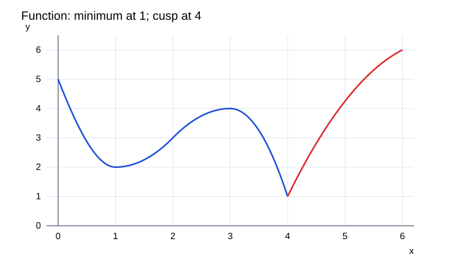

문제 요약
주어진 f 그래프에서 (a)증가,(b)감소,(c)위로 오목,(d)아래로 오목인 열린 구간과 (e)변곡점을 읽어라.

힌트. 정의와 주어진 조건을 식으로 옮겨 단계별로 계산한다.
해설.
부호표는 도함수의 영점뿐 아니라 정의되지 않는 점에서도 구간을 나눈다. \(f^{\prime}\)의 부호는 증감, \(f^{\prime\prime}\)의 부호는 오목성을 나타낸다. 이계도함수가 0이라는 사실만으로 변곡점이 되지 않으며, 그래프의 점을 지나 오목성이 실제로 바뀌는지 확인한다.
접선 기울기의 부호로 증감을 판단하고, 기울기가 커지거나 작아지는지를 보고 오목성을 판단한다.
\((a)\ (1,3),(4,6)\)
\((b)\ (0,1),(3,4)\)
\((c)\ (0,2)\)
\((d)\ (2,4),(4,6)\)
\((e)\ (2,3)\)
최종 답. \((a)\ (1,3),(4,6);\ (b)\ (0,1),(3,4);\ (c)\ (0,2);\ (d)\ (2,4),(4,6);\ (e)\ (2,3)\)
검산·주의점. 도함수의 부호 변화를 구간별로 확인한다. 정의역에서 제외된 점은 극값이나 변곡점으로 세지 않는다.
Problem summary
Read from the supplied f graph the open intervals of(a)increase,(b)decrease,(c)upward concavity,(d)downward concavity,and(e)inflection points.
Hint. Translate the definitions and conditions into equations, then work through them.
Solution.
Split sign charts at derivative zeros and undefined points. The sign of \(f^{\prime}\) controls monotonicity and that of \(f^{\prime\prime}\) controls concavity. A zero second derivative alone does not establish an inflection: concavity must change across an actual point on the graph.
Use the sign of tangent slopes for monotonicity,and their increase/decrease for concavity.
\((a)\ (1,3),(4,6)\)
\((b)\ (0,1),(3,4)\)
\((c)\ (0,2)\)
\((d)\ (2,4),(4,6)\)
\((e)\ (2,3)\)
Final answer. \((a)\ (1,3),(4,6);\ (b)\ (0,1),(3,4);\ (c)\ (0,2);\ (d)\ (2,4),(4,6);\ (e)\ (2,3)\)
Check and conditions. Check derivative signs interval by interval. Excluded domain points are not extrema or inflection points.